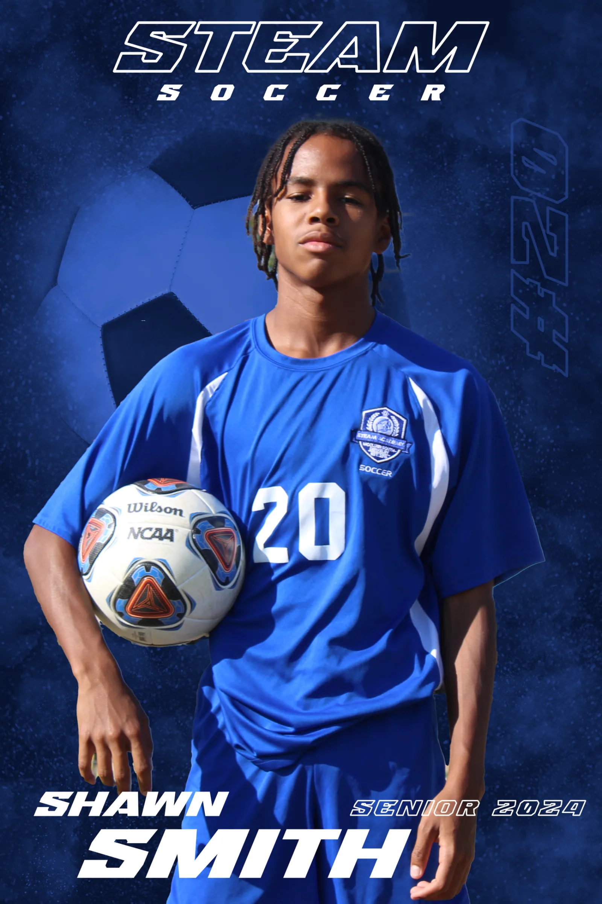
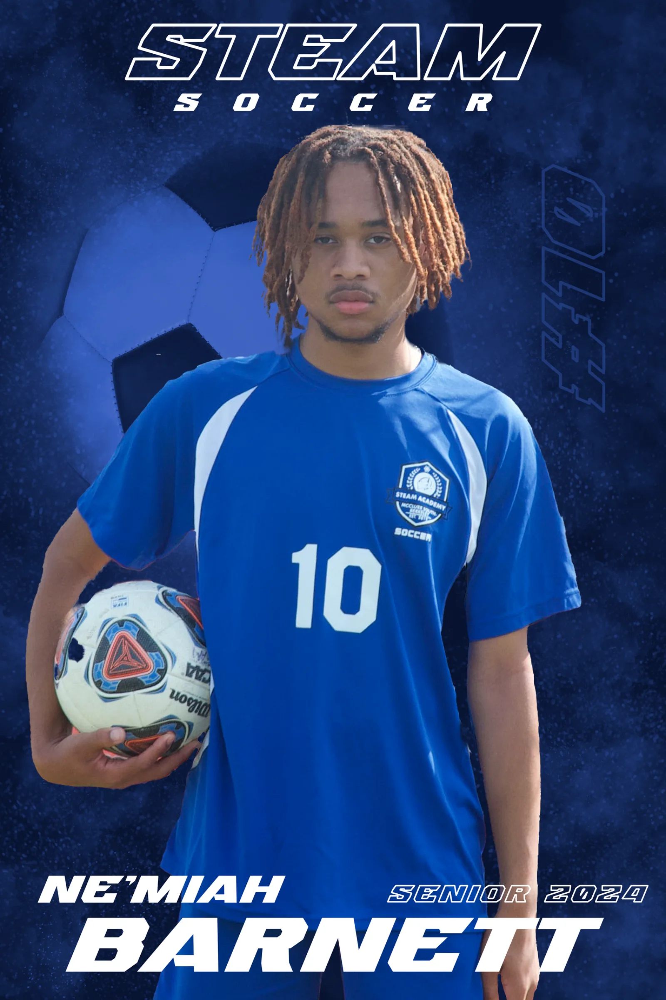
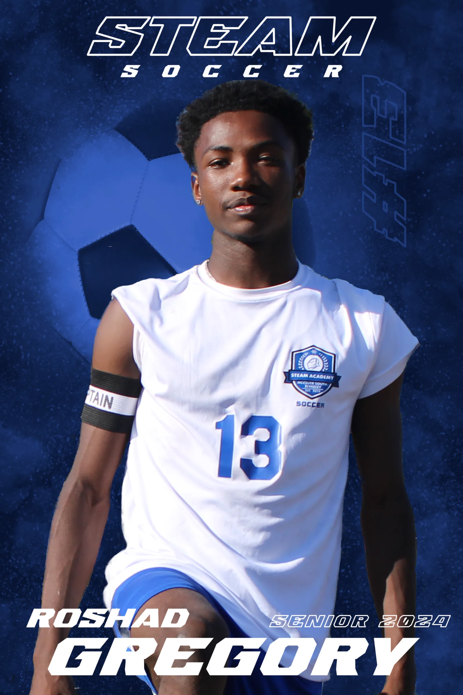
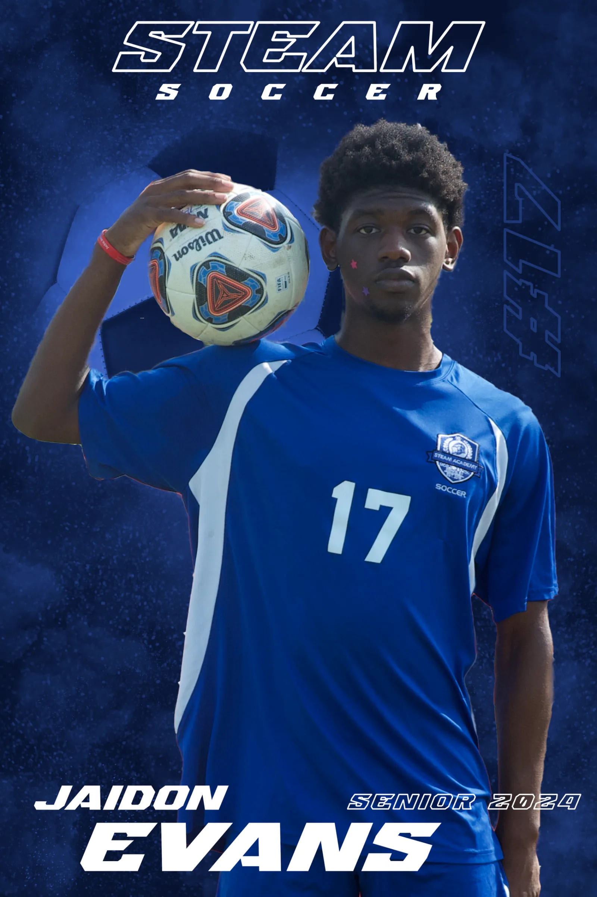

Project Overview
Photography meets design, from shoot to final poster.
For STEAM Academy's 2024 soccer season, I created a complete senior night poster series celebrating four graduating players. This project combined my photography and graphic design skills, I conducted the teen portrait photo shoots, then designed dramatic sports posters using Adobe Illustrator and Photoshop.
The challenge was creating a cohesive visual identity that honored each athlete individually while maintaining consistent branding across the series. The design needed to capture the energy and prestige of senior night while creating keepsakes families would treasure.
Project Details
Team
STEAM Academy
High School Soccer
Senior Night 2024
Services
Portrait Photography
Photo Editing
Poster Design
Print Production
Featured Athletes
Shawn Smith (#20)
Ne'Miah Barnett (#10)
Roshad Gregory (#13)
Jaidon Evans (#17)
Design Elements
Custom Typography
Dramatic Backgrounds
Team Branding
Photo Compositing
Design Process
The project began with coordinated portrait sessions where I photographed each senior in their soccer uniforms. I directed poses that showcased their confidence and connection to the sport (holding soccer balls) standing in athletic stances, and capturing their personalities beyond just being athletes.
For the poster design, I developed a dramatic blue textured background system that evokes both the intensity of competitive sports and the school's colors. Using Photoshop, I carefully masked each athlete from their original background and integrated them into the designed environment, ensuring realistic lighting and shadows.
The typography system features bold, italic letterforms for player names that convey motion and energy, complemented by the clean "STEAM SOCCER" branding at the top. Each player's jersey number is subtly integrated into the background design, creating depth and personalization. The "SENIOR 2024" designation anchors each composition while marking this milestone moment in their athletic careers.
Senior Poster Gallery

Shawn Smith
Senior 2024 · #20 · Dramatic blue jersey composition

Ne'Miah Barnett
Senior 2024 · #10 · Confident portrait with soccer ball

Roshad Gregory
Senior 2024 · #13 · White jersey alternate design

Jaidon Evans
Senior 2024 · #17 · Dynamic pose with elevated ball
Results & Impact
The senior night posters successfully celebrated each athlete while creating a unified visual campaign for STEAM Academy's soccer program. The dramatic, professional designs elevated the standard senior night experience, providing families with high-quality keepsakes commemorating their students' athletic achievements.
By handling both the photography and design phases, I ensured complete creative control over the final aesthetic, from initial pose direction through final color grading and typography. This integrated approach resulted in cohesive posters that felt professionally produced while maintaining authentic representations of each athlete's personality.
The project demonstrated my ability to execute complete creative campaigns from concept through delivery, combining technical photography skills with advanced graphic design capabilities. The posters were displayed at the senior night ceremony and became treasured mementos for graduating athletes and their families.